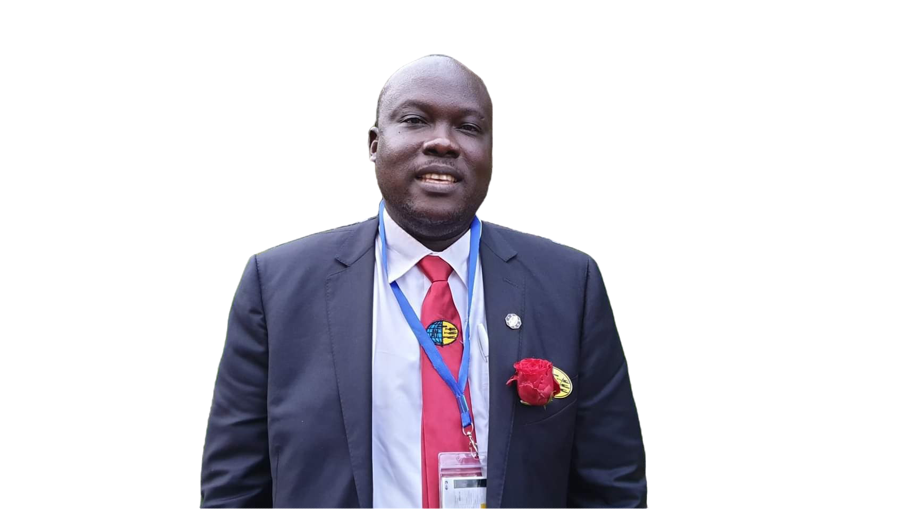

Jared Jacob
Jared Jacob is the head of the family.
Jared Jacob is the head of the family.
Esther is the firstborn of the Jared family. She is currently in Senior 3 at Bugema Adventist Secondary School. Known for her leadership skills and dedication, Esther is a positive role model to her siblings and friends.
Kemin is the second-born and is in Senior 1. With a curious mind and a love for learning, Kemin enjoys school and is eager to make his family proud with his achievements.
Kemin is the Fith-born and is in p 1. With a curious mind and a love for learning.
Kemin is the forth-born and is in Primary Five. With a curious mind and a love for learning, Anzo enjoys school and is eager to make his family proud with his achievements.
Kemin is the last-born. With a curious mind and a love for learning, Jethro enjoys playing and making everyone at home happy.
Kamanda is an adopted member of the family, currently in Senior 3. He has a cheerful personality and is known for his athletic skills. Kamanda fits right in with the Jareds, adding to the family’s joyful atmosphere.
Drago is also an adopted member, studying Software Engineering at Bugema University. His technical skills and dedication to his studies make him an inspiration to his younger siblings, and he often shares his knowledge with them.
Anyovi is one of the adopted children and is set to join campus soon. He is eager to start his academic journey and brings a calm, reflective presence to the family.